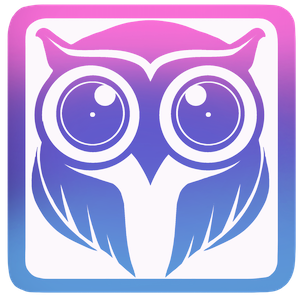
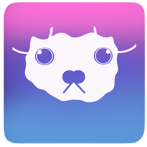
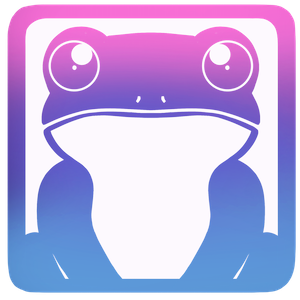
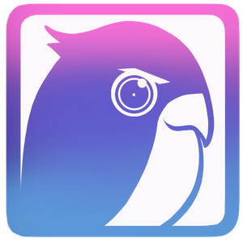
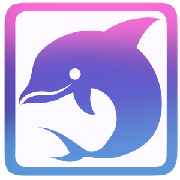

「なんとなく寝つけない夜」「モヤモヤが頭から離れない日」
そんな時、自分の気分に合った音を選んでみませんか？
静かな夜、頭の中が忙しいあなたに 落ち着いた音で、心のノイズを静かに。
ふわふわと夢の中へ。定番の羊でリラックス。死の儀式にぴったり
外の世界をシャットアウトしたい夜。雨のリズムに合わせて心をととのえる
明るい明日を信じたくなる音。自然のやさしさが背中をそっと押してくれる
海の中に浮かんでいるような安心感。1日頑張ったら、浮いてみよう♩
あなたの眠りを心地よいものに、する